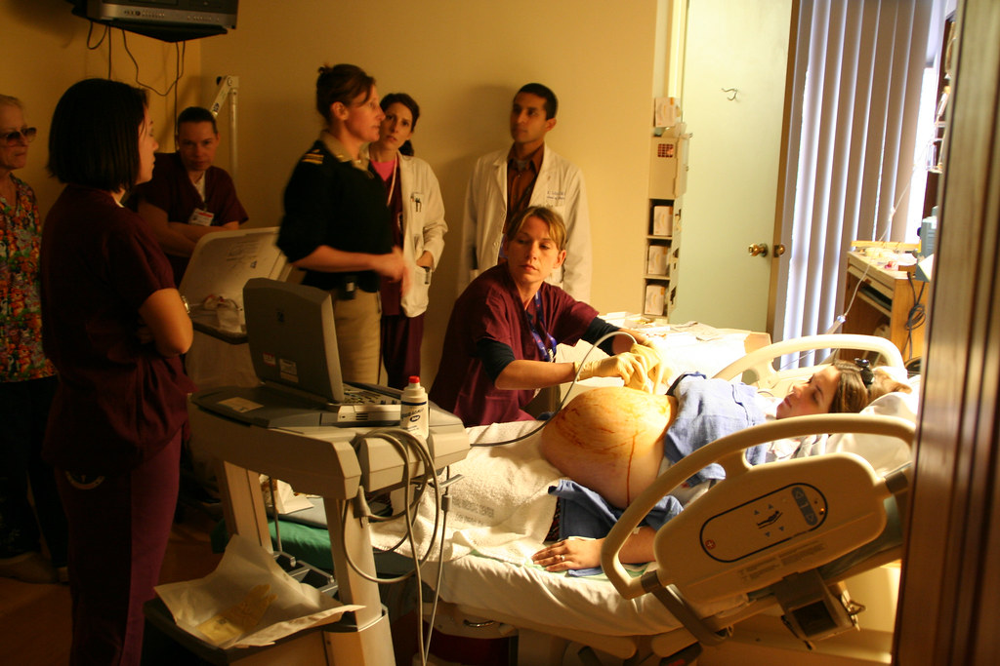

em geral após 16 semanas (alguns falam a partir de 14, com risco maior)
Cordocentese
após 18 semanas
Hierarquia de risco
BVC dá diagnóstico mais precoce, mas com risco maior que amniocentese. Das três, a amniocentese tem o menor risco de complicação para investigação de malformação/aneuploidia. Risco de óbito fetal com amniocentese: em torno de 0,5% (âncora clássica de banca).
Nota lateral (ATUALIZAÇÃO-DISPONÍVEL): séries modernas frequentemente apontam risco menor que 0,5%; aconselhamento real = risco baixo, operador-dependente. Em prova com número clássico, 0,5% permanece o mais cobrado. Hierarquia amnio < BVC < cordo permanece válida.
Risco de óbito com cordocentese: cerca de 1 a 3%.
Técnica e o papel da cordocentese
Técnica da amniocentese: coleta de líquido amniótico em bolsão, guiada por US — menos arriscada que coletar vilo. Cordocentese = puncionar cordão umbilical. Cordocentese é mais central na doença hemolítica (hematimetria fetal / decidir transfusão) do que na investigação de malformação.
Amniocentese como menor risco na investigação de aneuploidia
Na prática de malformação/aneuploidia, predomina amniocentese pelo risco.
Resumo operacional: BVC 10–13 sem (mais precoce, mais risco). Amnio ≥16 sem (menor risco, ~0,5% clássico). Cordo ≥18 sem (1–3%, mais central em doença hemolítica).
BAQUE: os três procedimentos invasivos no eixo de semanas com badges de risco.

Amniocentese guiada por US · Kruso · Wikimedia CC BY-SA
Quiz — Página 14
Q1. Janela típica de BVC:
A Após 18 sem.
B10–13 sem.
C Apenas no parto.
D 28–32 sem.
✓ Correto! BVC = 10–13 semanas. É o mais precoce dos invasivos.
✗ Incorreto. A janela da biópsia de vilo corial é 10–13 semanas.
Q2. Menor risco entre os invasivos para aneuploidia (clássico de prova):
A Cordocentese.
B BVC.
CAmniocentese.
D Todos iguais a 5%.
✓ Correto! Amnio ~0,5% clássico; cordo 1–3%; BVC mais precoce e mais risco que amnio.
✗ Incorreto. Amniocentese tem o menor risco (~0,5%) entre os três invasivos.
Q3. Cordocentese na prática atual de aneuploidia:
A Primeira escolha sempre.
BMais central em doença hemolítica; na malformação predomina amnio.
C Sem risco.
D Só antes de 12 sem.
✓ Correto! Cordocentese é mais central na doença hemolítica; na aneuploidia, predomina amnio.
✗ Incorreto. Cordocentese é mais usada em doença hemolítica; para aneuploidia, predomina amniocentese.